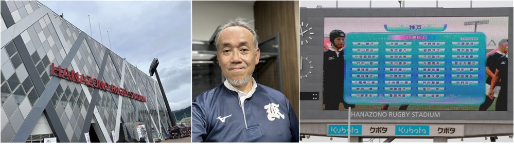

代表
有 吉 泰 介
ありよし たいすけ
略歴
|
|
大阪大学大学院基礎工学研究科で情報工学を学ぶ。工学修士。
証券、生命保険、自動車販売等の営業活動を支援するシステムコンサルティングに就く。
本社機構、人材開発部門においてグループ会社を含め初任から三年次までのSIer教育主任を担当。 本社機構、品質監理部門においてグループ会社を含め全社のSIerが遵守すべき、システム構築活動の プロセスの枠組み(フレームワーク)を開発し、全社規定としてその維持を務める。 東京大学松尾研究室の学外研究機関で機械学習とニューラルネットワークを学ぶ。 その後退職し、自ら会社を興すことを決意する。 |

趣味
ロック音楽鑑賞、ランニング、コーヒードリップ、食べ歩き、文房具コレクター
ラグビーフットボールは高校時代に県大会で準優勝。大学進学時も続ける。
近くはマスターズ花園2023に出場する。
